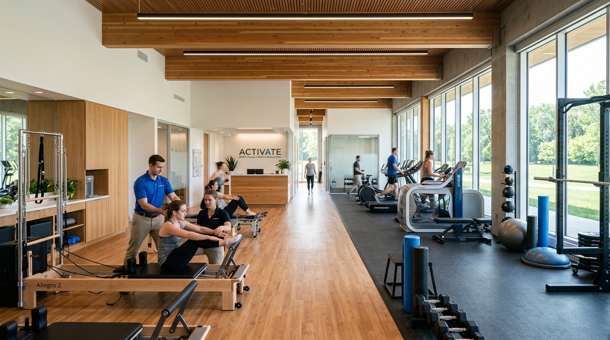
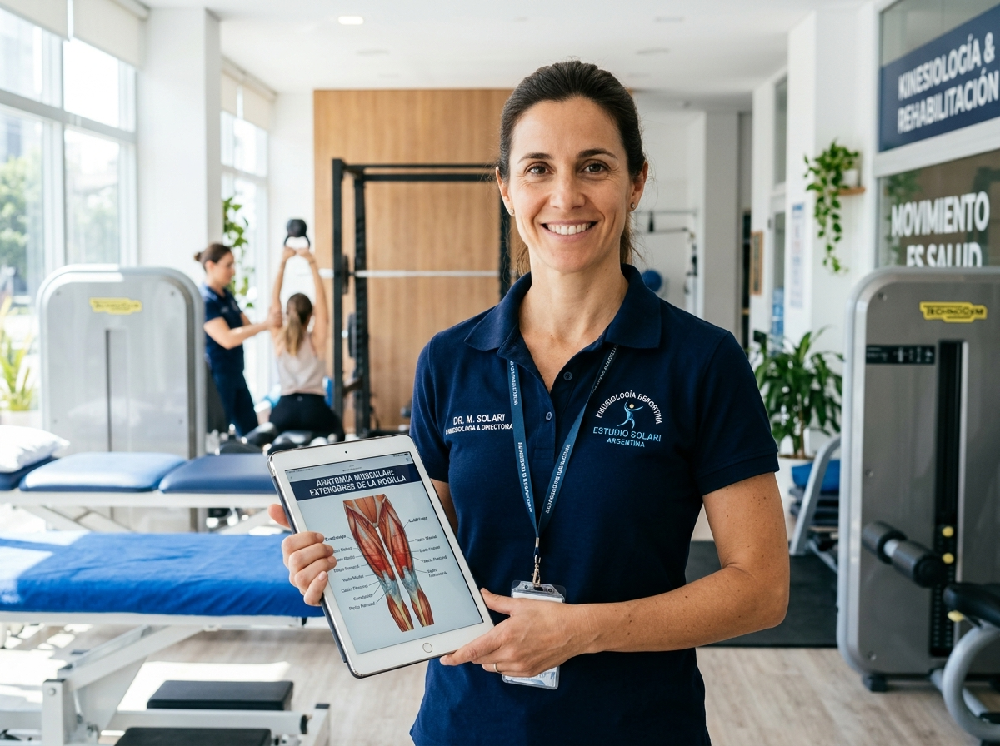
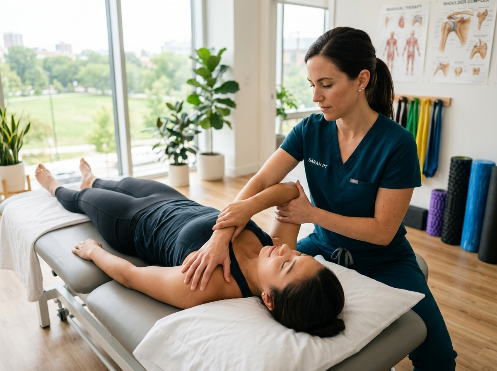

Rehabilitación activa de columna, hombro, rodilla y lesiones deportivas. Combinamos terapia manual biomecánica, aparatología de alta intensidad y gimnasio terapéutico para tu alta médica definitiva.

Hacé click en la zona afectada para ver el protocolo de rehabilitación, aparatología recomendada y tiempo promedio de recuperación.
Seleccioná para ver el plan kinético:
Descompresión radicular, tracción suave, desinflamación con magnetoterapia de alta intensidad y estabilización de la faja lumbo-pélvica (Core) para eliminar el dolor punzante y evitar cirugías.
Un plan estructurado en 3 fases para pasar del dolor agudo al rendimiento óptimo.
Fisioterapia analgésica y antiinflamatoria para desactivar el dolor incapacitante y permitir la movilidad básica sin sufrimiento.
Restauración del rango de movimiento articular y flexibilización miofascial para liberar tensiones compensatorias.
Fortalecimiento en gimnasio terapéutico para garantizar que la articulación soporte las cargas reales de tu deporte o vida diaria.
Invertimos en aparatología de grado hospitalario para acelerar los tiempos biológicos de cicatrización y regeneración.
Pistola neumática focal/radial para calcificaciones, espolón calcáneo y tendinopatías crónicas rebeldes.
Campo electromagnético súper inductivo que acelera la consolidación ósea en fracturas y edemas óseos.
Radiofrecuencia capacitiva y resistiva que bioestimula el colágeno y desgarros musculares profundos.
Botas de compresión neumática dinámica para drenaje linfático acelerado y descarga de piernas en deportistas.
Completá los datos de tu consulta. Aceptamos derivaciones médicas de traumatólogos y consultas particulares con factura oficial para reintegro en prepagas.
Profesionales dedicados al tratamiento manual uno a uno en consultorio privado y gimnasio terapéutico.


Instalaciones accesibles en planta baja, con boxes privados de fisioterapia y amplio gimnasio de readaptación con luz natural.